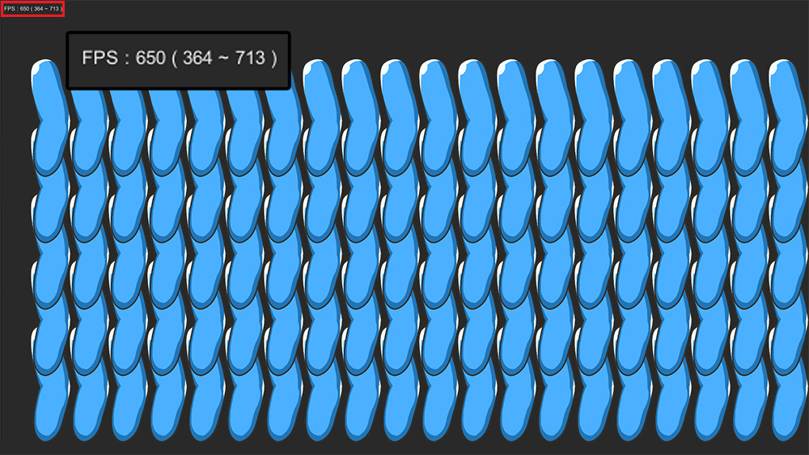
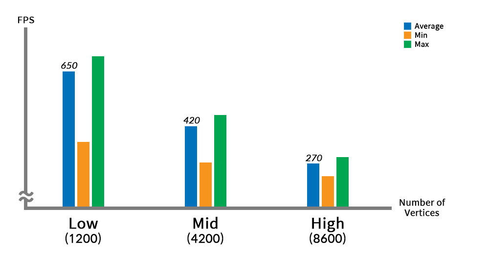
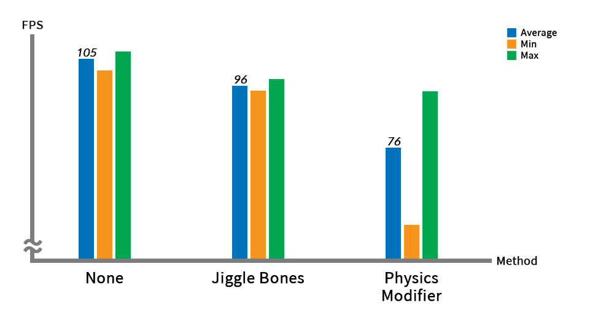

AnyPortrait > マニュアル > パフォーマンスを向上
パフォーマンスを向上
1.3.2
ゲームを作成するときに実行パフォーマンスを向上させる作業は非常に重要ですが、その分は難しいことです。
同様に、AnyPortraitを利用してゲームを作成する際にも、パフォーマンスに関する問題は、慎重に管理する必要があります。
このページで説明しているいくつかの要素は、パフォーマンスの最適化に大きな助けになるでしょう。
参考
- このページでのパフォーマンステストは、実行環境によって結果が異なる場合があります。
- GPUの最適化には、関連ページを参照してください。
- 高いFPSを確認するためにVSyncオプションを無効にして構築しました。
最新バージョンのAnyPortrait利用

私たちのチームは、継続的にAnyPortraitの基本的な性能を向上させようと努力しています。
以前のバージョンのv1.3.0/v1.3.1からかなりのアニメーションとリギングについてのパフォーマンスが向上しました。
v1.3.2では、リギングと頂点処理のパフォーマンスが向上しており、また、メモリ割り当ての問題を解決しました。
最新バージョンのAnyPortraitに更新することは、皆さんのゲームのパフォーマンスの向上に役立つでしょう。
（上記のプロファイリング結果は、以下に説明する例をUnityエディタ上でテストした結果です。）
頂点数と性能
AnyPortraitは、CPUベースの頂点処理をするので、頂点数が増えるほど、パフォーマンスが低下します。
メッシュに頂点が多くなるとそれだけ精密に表現することができますが、高い性能を期待することは困難です。
逆に頂点が少なすぎる場合は、アニメーションで見た目がぎこちないなることがあります。
したがって、適切な数の頂点にメッシュを構成することが非常に重要です。

頂点による性能比較のために簡単な例を用意しました。
1つのメッシュと2つのボーンで構成された関節アニメーションのサンプルを上記のように作成しました。

同じアニメーションが、頂点の数が異なるように、サンプルを3つに分けて準備しました。
同じ画像に対して12、42、86個の頂点をそれぞれのメッシュを作成しました。

少ない数の頂点にリギングを適用した画面です。
関節部分で多少ラフ折る姿が見えますが、大きくおかしくはないに見えます。

メッシュに頂点が、多くの場合のリギングを適用した画面です。
リギング重みを細かく適用することができ、相対的に関節部分の表現が自然です。

関節が折ったが広がるシンプルなアニメーションを作成しました。

同じアニメーションを3つのサンプルに適用したときの様子です。
頂点が多いほど、関節部分の表現が正確なことを見ることができます。
この結果だけ見れば頂点が多いほど、アニメーションの品質が良く見えます。

現在の性能をテストしてみましょう。
このサンプルは、上記のように100個配置されるようにスクリプトを作成しました。

リアルタイムで「FPS（Frames Per Second）」の「平均、最小、最大」を見ることができるスクリプトを作成しました。
このシーンをWindows用PCアプリで作成した後、テストして、以下のような結果を確認しました。

上記のグラフは、頂点の数に応じてFPSがどのように変わるのかを示します。
少ない数の頂点にメッシュを設定した場合（Low）円平均650 FPSという高い実行性能が記録された。
逆に、多くの頂点にメッシュがある場合（High）円270 FPSの低い実行性能が記録された。
（FPSが高いほど性能が良いことを意味します。）
つまり、頂点数に応じてパフォーマンスが減るのを見ることができます。
アニメーション品質と実行性能の両方を考慮して、適切なレベルの頂点密度を維持しながら、キャラクターを作成することをお勧め。
物理的な効果と性能
物理的な効果は、ゲームエンジンの性能に大きく影響を与える要素です。
AnyPortraitも物理的な効果を実装する二つの方法があります。
「物理モディファイヤ（Physics Modifier）」と「ジグルボーン（Jiggle Bone）」がそれです。
この二つの機能がパフォーマンスに与える影響を確認してみましょう。

デモに登場するキャラクターにそれぞれ「物理モディファイヤ」、「ジグルボーン」は、何も適用していない3つのサンプルを用意しました。
「物理モディファイヤ」は、上記の画像のように、いくつかのメッシュに適用されました。

他のサンプルでは、「ジグルボーン」を適用して同様の物理動きを示すように設定しました。

上記と同様に30個のキャラクターが登場して、アニメーション中にFPSを記録するようにスクリプトを作成した後、PCアプリで作成して、パフォーマンステストを実施しました。

物理的な効果を適用していない場合には、100以上の高いFPSを記録し、これを基準に他の物理的な効果の性能記録を比較してみましょう。
「ジグルボーン」を適用した場合は、物理的な効果を適用していない場合よりも10程度のFPSの低下がありました。
「物理モディファイヤ」を適用した場合には、なんと30のFPSの低下が記録されました。
特に、「物理モディファイヤ」を適用した場合の最小FPSは非常に低いことを見ることができました。
「物理モディファイヤ」は頂点ごとに物理材質による演算をするため、パフォーマンスの低下が大きな特徴です。
したがって、「物理モディファイヤ」は、固定フレームで動作するように開発されました。
「物理モディファイヤ」が動作するフレームと、そうでないフレームの格差がかなり大きいです。
一方、「ジグルボーン」は、比較的頂点数よりも少ないボーンを対象とし、演算量が非常に少ない機能です。
実際に「ジグルボーン」は、すべてのフレームで動作も関わら相対的に高い実行性能を示しています。
「ジグルボーン」と「物理モディファイヤ「が表現する対象は多少の違いがあります。
しかし、もし二つの方式を交換することができる場合には、「ジグルボーン」を利用してみることが、パフォーマンスの向上に役立つでしょう。
MonoとIL2CPP
Unityは、「C#」で作成され、このスクリプトを動作させるために、基本的に「Mono」を利用して、ビルドをします。
しかし、Unityが更新され「IL2CPP」というビルド方式をサポートします。
この方式は、「C#」スクリプトを比較的高速な「C++」コードに変更して実行するので、既存の「Mono」ビルドよりも高い実行性能を持ちます。
ビルドしようとするターゲットプラットフォームが「IL2CPP」をサポートする場合は、この説明が大きく役立つでしょう。
「IL2CPP」の詳細な説明は、「公式マニュアル」を参照してみてください。

(1) Unityエディタの「Project Settings」ウィンドウを開き、「Player」メニューを選択します。
(2) 「Scripting Backend」のオプションを「Mono」で「IL2CPP」に設定します。
この状態でゲームを構築して実行してみましょう。
（もし「Mono」で構築されたパスにそのままビルドすると、ビルドが失敗することがあります。）

上記のキャラクターの例を「Mono」と「IL2CPP」方式で、それぞれビルドしてテストした結果です。
「Mono」方式で「96 FPS」を記録した結果と比較して、「IL2CPP」方法で構築した場合、50％以上増加した「148 FPS」を記録しました。
「IL2CPP」はUnityアプリのCPU実行性能を大幅に向上させる、AnyPortraitはほとんどCPUリソースを利用して動作をするので、最適化の効果が非常に大きく表示されます。
「IL2CPP」ビルドオプションがあなたのプロジェクトに適用されることができるか、まず確認した後、これを積極的に活用ヘボシルことをお勧めします。